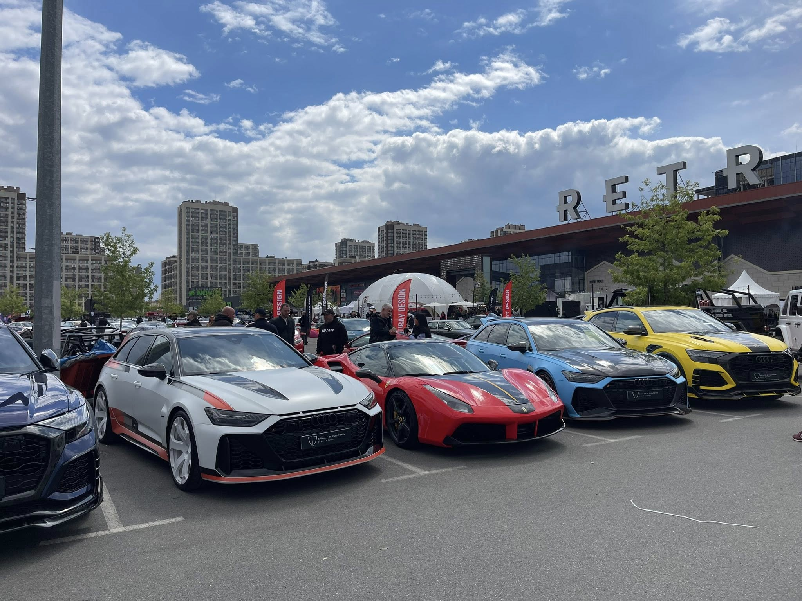
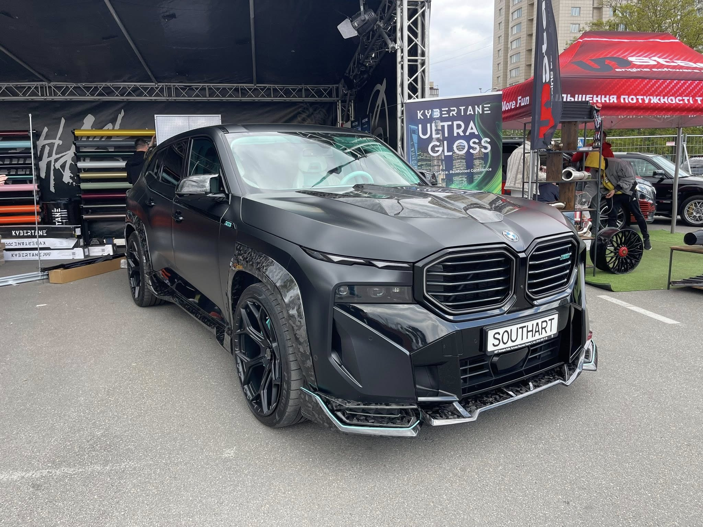
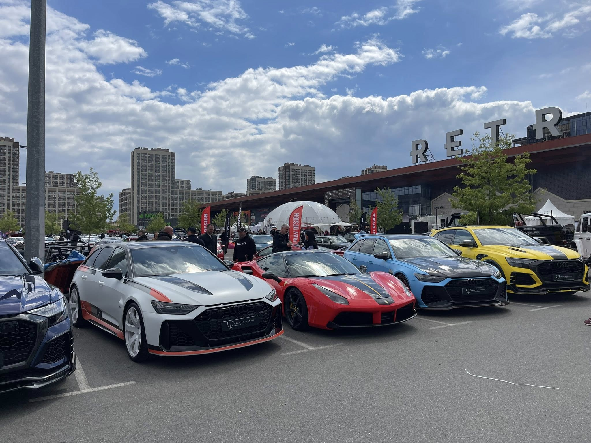
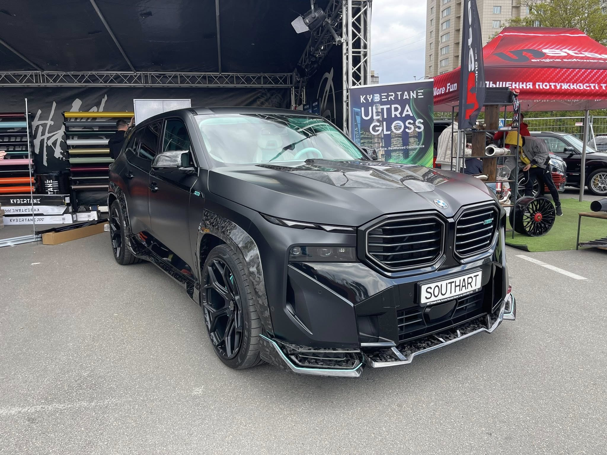

KYIV CAR FEST - більше, ніж просто виставка та трохи більше, ніж фестиваль в класичному його розумінні. KYIV CAR FEST - це місце, де натхнення та мрії кожного авто-прихильника втілюються у життя.
В кожного з нас є свій шлях і свій той самий момент, коли автомобіль став трохи більшим, ніж просто засіб пересування. При цьому, не важливо скільки Вам років, якої Ви статі, яку музику слухаєте… якщо Ви одного разу доторкнулись / сіли / завели / відчули «це саме те авто» - ми точно знаємо, що це змінює життя та безліч його аспектів.
Ми починаємо любити авто більше, доглядати ретельніше, купувати наступні і не завжди практичні моделі, колекціонувати, модифікувати, тюнінгувати і хотіти всім це показати. Ми шукаємо однодумців та таких же поціновувачів, з якими можна годинами спілкуватись про авто не пояснюючи практичність та прагматичність свого вибору.

Це змушує поглиблювати знання, розвиватись, вивчати технічні та естетичні аспекти. Це змінює наше оточення, вносить корективи в образ наших буднів та в стиль наших вихідних. Це захоплення, яке змінює життя. А результатом всіх цих процесів є ті самі щасливі години / дні / тижні на рік, коли ми з задоволенням сідаємо в свій відреставрований Pontiac 1966 року, чи максимально занижений VW Golf MK1, чи модифіковану Mazda Miata, чи підготовлений для треку GTR і їдемо робити себе та своїх близьких трохи щасливішими, даруючи при цьому трохи естетичної насолоди оточуючим. Лікоть у вікні, темні окуляри, правильно підібраний саунд трек, хтось приємний на пасажирському сидінні, ідеальна кількість циліндрів та коней під капотом і Ви в цей момент найщасливіша людина в світі - знайоме відчуття? Ні? Тоді Вам точно до нас) На території фестивалю Ви зможете побачити та доторкнутися до того, чого Вам завжди хотілося, але Ви про це ще цілком могли не знати.
 



РЕЄСТРАЦІЯ ПАРТНЕРІВ
Хочете креативно представити свій бренд та знайти нових клієнтів? Ви в правильному місці! Заповніть форму і давайте це реалізуємо!